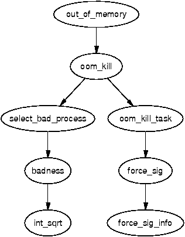

VM 子系统中我们要讨论的最后一个部分，是“内存耗尽”（Out Of Memory，OOM）管理器。本章故意写得很短，因为它只承担一个简单任务：检查是否有足够可用内存来满足请求，确认系统是否真的已经耗尽内存，若确实如此，则挑选一个进程将其杀掉。这是 VM 中颇具争议的一部分，多次有人建议将其去掉。无论它在最新的内核中是否还存在，作为一个会牵动到若干其他子系统的模块，它仍然值得一看。
对于某些操作，例如通过 brk() 扩展堆，或用 mremap() 重映射地址空间，系统会检查是否有足够的可用内存来满足这次请求。注意，这条路径与下一节讨论的 out_of_memory() 路径是分开的。这条路径是为了尽可能避免系统进入 OOM 状态。
在检查可用内存时，所需页数会作为参数传给 vm_enough_memory()。除非系统管理员明确允许内存超额提交（overcommit），否则会去查看可用内存的多少。为了估算潜在可用的页数，Linux 把下列几项数据相加：
如果累加得到的页数足以满足本次请求，vm_enough_memory() 就向调用者返回 true。如果返回 false，调用者就知道内存不可用，通常会向用户空间返回 -ENOMEM。
当机器内存吃紧时，旧的页帧会被回收（见第 10 章）；但即使在以最高优先级进行扫描的情况下，回收过程也可能无法释放出足够多的页来满足请求。当确实无法释放出页帧时，会调用 out_of_memory() 来判断系统是否已经耗尽内存、是否需要杀死一个进程。

遗憾的是，有可能系统其实并未耗尽内存，只是需要等待 I/O 完成，或等待页被换出到后备存储。这种情况令人头痛，倒不是因为系统还有内存，而是因为这时不必要地调用了该函数，进而可能造成进程被无谓地杀掉。在决定杀掉进程之前，函数会依次进行下列检查：
只有在上述所有检查都通过之后，才会调用 oom_kill() 来挑选一个进程将其杀掉。
select_bad_process() 函数负责挑选要被杀掉的进程。它会遍历每一个正在运行的任务，并用 badness() 函数计算每个任务有多“适合”被杀掉。badness 的计算公式如下，注意其中的平方根是用 int_sqrt() 算得的整数近似值：
badness_for_task = total_vm_for_task / (sqrt(cpu_time_in_seconds) * sqrt(sqrt(cpu_time_in_minutes)))
这样选出来的，将是一个使用了大量内存但又“活得并不久”的进程。长时间运行的进程不太可能是内存短缺的元凶，因此该公式倾向于选出使用大量内存但运行时间不长的进程。如果该进程是 root 进程，或者具有 CAP_SYS_ADMIN 能力，得到的分数会被除以 4，因为这里假定具有 root 权限的进程表现良好。类似地，如果它具有 CAP_SYS_RAWIO 能力（可直接访问裸设备），分数还会再被除以 4，因为我们不希望去杀一个能直接访问硬件的进程。
一旦选定了某个任务，就会再次遍历进程链表，向所有与被选中进程共享同一个 mm_struct 的进程（也就是它的线程）发送信号。如果该进程具有 CAP_SYS_RAWIO 能力，则发送 SIGTERM，给它一次干净退出的机会；否则就发送 SIGKILL。
是的，就这些。除了“内存耗尽管理”牵动了不少其他子系统之外，它本身并没有太多内容。
在 2.6 中，OOM 管理的大部分内容基本保持不变，主要新增的是“VM 计入对象”（VM accounted objects）。这类 VMA 会被打上 VM_ACCOUNT 标志，4.8 节中曾首次提到。在对带有该标志的 VMA 进行操作时，会做额外的检查，以确保有足够的可用内存。引入这一复杂度的主要动机，是为了尽量避免动用 OOM 杀手。
一些总是会被设置 VM_ACCOUNT 标志的区域包括：进程栈、进程堆、用 MAP_SHARED 标志 mmap() 出来的区域、可写的私有区域，以及通过 shmget() 建立的区域。换句话说，大多数用户空间的映射都会带有 VM_ACCOUNT 标志。
Linux 通过 vm_acct_memory() 来记账：每当为这些 VMA 提交内存时，它会增加一个名为 committed_space 的变量；当 VMA 被释放时，则通过 vm_unacct_memory() 减少该值。这是一种相当简单的机制，但它使 Linux 在决定是否再向用户空间提交内存时，能够“记得”自己已经提交了多少。
这些检查由 security_vm_enough_memory() 完成，这就把我们引到了另一项新特性上。2.6 提供了一项功能，允许与安全相关的内核模块覆盖某些内核函数。可用的钩子完整列表保存在一个名为 security_ops 的 struct security_operations 中。其中有许多默认的“哑”函数（dummy），全部列在 security/dummy.c 中，大多数都只是 return 而已什么也不做。如果系统未加载任何安全模块，则使用的 security_operations 结构体名为 dummy_security_ops，它使用的全部都是这些默认函数。
默认情况下，security_vm_enough_memory() 会调用在 security/dummy.c 中声明的 dummy_vm_enough_memory()，它与 2.4 中的 vm_enough_memory() 非常相似。新版本会把以下信息累加起来，用以判定可用内存：
这些页数减去给 root 进程预留的 3%，便是本次请求可用的总内存。如果内存充足，还要进一步检查已提交的内存总量是否超过允许的阈值。允许的阈值为 TotalRam * (OverCommitRatio/100) + TotalSwapPage，其中 OverCommitRatio 由系统管理员设置。如果已提交的空间总量没有过高，就返回 1，让本次分配继续进行。
原文来源：understand016.html（《Understanding the Linux Virtual Memory Manager》by Mel Gorman）